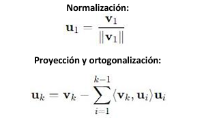
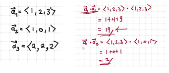

La base ortonormal es una base para un espacio vectorial equipado con un producto interno en el cual todos los vectores de la base son mutuamente ortogonales (su producto interno es cero) y tienen una longitud (norma euclidiana) de uno.
El proceso de ortogonalización de Gram-Schmidt es un método para tomar una base arbitraria de un espacio vectorial con producto interno y convertirla en una base ortogonal u ortonormal.
Si se desea una base ortonormal en lugar de solo ortogonal, normalizamos cada uno de los vectores ortogonales resultantes Uk dividiendo por su norma euclidiana.
